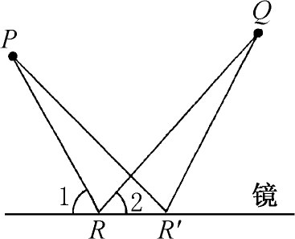
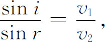
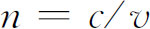
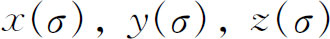
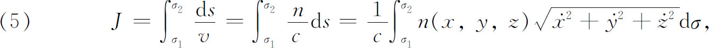
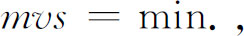
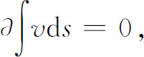
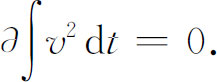

3．最小作用原理
正当变分问题的解取得进展的时候，物理学给这一课题的工作直接提供了一个新的推动力。同时代的发展是最小作用原理。为了说明这个原理的基础，我们必须往回追溯一下。欧几里得在他的《反射光学》（Catoptrica）（第7章第7节）中已经证明，光线从P点到镜面然后到Q点所取的路径是使∠1＝∠2（图24.4）。后来亚历山大城的赫伦（Heron）证明了光线实际取的路径PRQ比任何一个能够想象的路径，譬如PR′Q，都要短。因为光线取最短的路径，如果在直线RR′上方的介质是均匀的，那么光线就以常速行进，从而取花时间最少的路径。赫伦把这个最短路径和最少时间原理应用到了凹和凸的球面镜的反射问题上去。

图24.4
根据这种反射现象，还根据哲学、神学和审美的原则，在希腊时代以后的哲学家和科学家们提出了一种学说，就是大自然以最短捷的可能途径行动，或者如奥林匹奥多鲁斯（Olympiodorus，公元6世纪）在他的《反射光学》中所说的：“自然不做任何多余的事或者任何不必要的工作。”达·芬奇（Leonardo da Vinci）说，自然是经济的，并且自然的经济是定量的。而格罗斯泰特（Robert Grosseteste）相信，自然总是以数学上最短和最好可能的方式行动。在中世纪时代，自然是以这一方式行动的观点是普遍地为人们所接受的。
17世纪的科学家至少是容易接受这种观念的，但是，作为科学家，他们企图把这种观念和支持这种观念的现象联系起来。费马知道反射时光线取需时间最少的路径，而且相信自然确实是简单而又经济地行动的，在1657年和1662年的信件中(13)，他确认了他的最小时间原理，这个原理说，光线永远取花时间最少的路径行进。他曾经怀疑过光的折射定律的正确性（第15章第4节），但当他在1661年(14)发现他能够从他的原理导出光的折射定律时，他不但解除了对折射定律的怀疑，而且更加确信他的原理是正确的了。
费马的原理在数学上有几种等价的陈述形式。按照折射定律

其中v1是光在第一介质中的速度，v2是光在第二介质中的速度。常用n表示v1对v2之比，叫做第二种介质相对于第一种介质的折射率；如果第一种介质是真空，则n叫做非真空介质的绝对折射率。如果c表示光在真空中的速度，那么绝对折射率

，其中v是光在介质中的速度。如果介质的特性是逐点变化的，则n和v都是x，y和z的函数。因此光线沿着曲线
从点P1行进到P2所需要的时间为
其中σ1是σ在P1的值而σ2是σ在P2的值。因此费马原理说：光线从P1行进到P2所取的实际路径是使J取极小的曲线(15)。
大约在18世纪初期，数学家们已经有了几个给人印象深刻的例子，说明自然的确试图使某些重要的量极大或极小化。最初曾经反对过费马原理的惠更斯证明了光线在具有变折射率的介质中传播时费马原理也是成立的。甚至牛顿的第一运动定律（该定律说直线或最短距离的运动是物体的自然运动）也表明自然界的欲望是要求经济化。这些例子暗示着可能存在某种更一般的原理。
当莫佩尔蒂（1698—1759）于1744年在光的理论方面进行工作时，他在一篇题为《直到现在看起来还是不能并存的不同法则的协调性》（Accord des différentes lois de la nature qui avaient jusqu'ici paru incompatibles）(16)的著述中提出了他著名的最小作用原理。他从费马原理出发，但是由于那时候对光速究竟是像笛卡儿和牛顿所相信的那样和折射率成正比，还是像费马所相信的那样和折射率成反比，有不同意见，所以莫佩尔蒂放弃了最小时间。事实上他不相信最小时间总是正确的。
莫佩尔蒂说，作用是质量、速度和所经距离的乘积的积分，自然界中的任何改变都是要使作用最小。莫佩尔蒂多少有点糊涂，因为他没有规定m，v和s的乘积是在什么时间区间上取的，又因为他在光学和某些力学问题的每个应用中对作用赋予不同的意义。
尽管莫佩尔蒂有一些物理方面的例子支持他的原理，但是他提倡这个原理还是出于宗教的原因。物质行为的各种规律必须具有上帝创造的完美性；而最小作用原理看起来好像满足这个准则，因为这个原理表明自然界是经济的。莫佩尔蒂宣称他的原理是自然界的普遍规律和上帝存在的第一个科学证明。欧拉在1740年和1744年间曾在这一课题方面同莫佩尔蒂通过信，同意莫佩尔蒂的观点：上帝一定已经按照某种这样的基本原理构造了宇宙，而这种原理的存在就证实了上帝的安排。
欧拉在他1744年的书的第二个附录中把最小作用原理作为一个精确的动力学定理作了详细的阐述。他只限于讨论单个质点沿平面曲线的运动。此外，他假定速度依赖于位置，或者用现代的术语来说，力可以从位势导出。然而莫佩尔蒂写为

而欧拉则写作

意思是对于路径改变的积分，它的变化率必须为零。因为ds＝vdt，欧拉还写下

这里，欧拉即使应用他的变分法技巧正确地把这个原理用于特殊问题，但是恰恰在积分的变化率是什么意思的问题上他是模糊的。至少欧拉证明了对于沿着平面曲线的运动，莫佩尔蒂的作用是最小的。
在相信一切自然现象都是为了使某个函数达到极大或极小，因而基本的物理原理应该表达某个函数被极大化或极小化这一点上，欧拉比莫佩尔蒂走得更远。特别是在研究物体在力的推动下的运动的动力学中这种原理应该是正确的。欧拉离开真理并不太远。